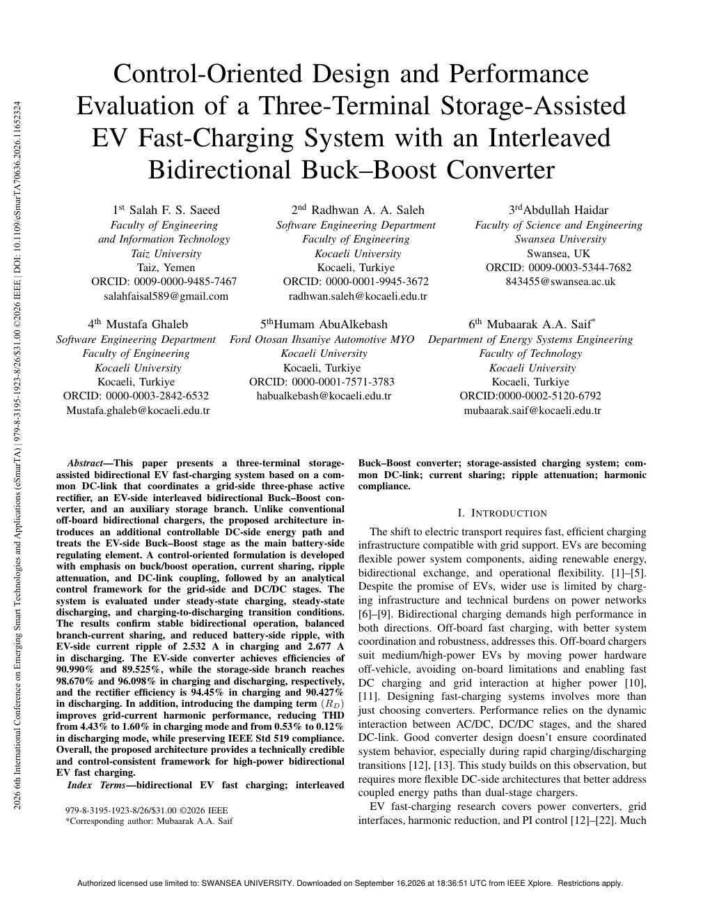

012026بحث أصيل

Control-Oriented Design and Performance Evaluation of a Three-Terminal Storage-Assisted EV Fast-Charging System with an Interleaved Bidirectional Buck–Boost Converter
تصميم موجه بالتحكم وتقييم أداء نظام شحن سريع للمركبات الكهربائية بثلاثة أطراف ومساعد بالتخزين
جهة النشر
المؤتمر الدولي السادس للتقنيات والتطبيقات الذكية الناشئة (eSmarTA 2026) · IEEE
دراسة تصميم وتقييم نظام شحن سريع ثنائي الاتجاه، يجمع وصلة تيار مستمر مشتركة وتخزينًا مساعدًا ومحوّل Buck–Boost متداخلًا.